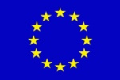
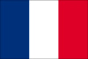
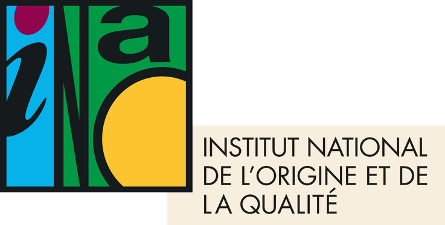
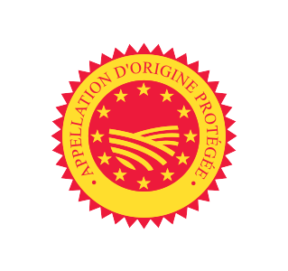
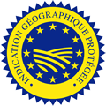
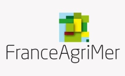

Le système des appellations
De l’Appellation d’Origine Contrôlée au Vin de France
En France, comme dans la plupart des pays de l’Union européenne, le vin est encadré par des organismes publics dont la mission est de protéger à la fois le consommateur et le vigneron : le consommateur, en lui garantissant que ce qui figure sur l’étiquette correspond bien à ce qui se trouve dans la bouteille ; le vigneron, en protégeant le nom et la réputation d’un lieu contre l’imitation.
In France, as in most of the European Union, wine is regulated by public bodies whose purpose is to protect both the consumer and the winegrower: the consumer, by guaranteeing that what is on the label is what is in the bottle; the winegrower, by protecting the name and reputation of a place against imitation.
Définition
L’INAO, l’établissement public chargé des appellations françaises, en donne en substance la définition suivante 1 :
L’Appellation d’Origine Contrôlée désigne un produit qui tire son authenticité et sa typicité de son origine géographique. Elle exprime le lien intime entre le produit et son terroir : les caractéristiques géologiques, agronomiques, climatiques et historiques d’une aire délimitée, ainsi que les disciplines humaines et les conditions de production particulières qui permettent d’en tirer le meilleur. Un tel produit ne peut être reproduit ailleurs.
Ces conditions de production sont aussi le fruit d’une tradition culturelle et historique — les « usages locaux, loyaux et constants », selon l’expression de la loi — et elles sont inscrites dans le règlement officiel de chaque appellation, le cahier des charges. Leur respect est vérifié par des organismes de contrôle indépendants agréés par l’INAO, notamment au moyen d’examens analytiques et organoleptiques (dégustation) des vins.
Plus simplement, une Appellation d’Origine Contrôlée est un ensemble de règles portant sur de nombreux paramètres : l’aire de production délimitée, les cépages autorisés, la densité de plantation et la taille, les rendements maximaux, la maturité et le degré d’alcool minimaux, le recours (ou l’interdiction) de l’irrigation, les pratiques de vinification, l’élevage et l’étiquetage.
L’AOC a donc pour but de protéger un nom acquis par un produit précis en raison du lieu où il est élaboré — et de la manière dont il l’est.
Le terroir n’a pas d’équivalent exact dans d’autres langues. Il désigne la combinaison du sol, du sous-sol, de la pente, de l’exposition et du climat d’un lieu donné, associée au savoir-faire humain — choix des cépages, traditions viticoles et œnologiques — qui s’y est développé au fil du temps. Le résultat dans le verre est ce que l’on appelle la typicité : le caractère reconnaissable qui fait qu’un vin « goûte » le lieu d’où il vient.
The INAO, the public body in charge of French appellations, defines the AOC in essence as follows 1:
The Appellation d’Origine Contrôlée designates a product which draws its authenticity and its typicity from its geographical origin. It expresses a close link between the product and its terroir: the geological, agronomic, climatic and historical characteristics of a delimited area, together with the human disciplines and specific conditions of production that make the best of them. Such a product cannot be reproduced anywhere else.
These conditions of production are also the fruit of cultural and historical tradition — “local, loyal and constant” customs (usages locaux, loyaux et constants), in the words of French law — and they are written into each appellation’s official rulebook, the cahier des charges. Compliance is checked by independent control bodies approved by the INAO, including analytical and organoleptic (tasting) examinations of the wines.
In simpler terms, an Appellation d’Origine Contrôlée is a set of rules covering a whole range of parameters: the delimited area of production, the authorised grape varieties, vine density and pruning, maximum yields, minimum ripeness and alcohol levels, the use (or ban) of irrigation, winemaking practices, ageing and labelling.
The purpose of the AOC is therefore to protect a name that has been earned by a specific product because of where — and how — it is made.
Terroir has no exact equivalent in English. It describes the combination of soil, subsoil, slope, exposure and climate of a given place, together with the human know-how — grape varieties chosen, viticulture and winemaking traditions — that has developed there over time. The result in the glass is what the French call typicité (typicity): the recognisable character that makes a wine taste of where it comes from.
1863 – 2009
Les origines du système des appellations remontent à la fin du XIXe et au début du XXe siècle. Le phylloxéra — un minuscule puceron s’attaquant aux racines, importé accidentellement d’Amérique et contre lequel la vigne européenne était sans défense — est signalé pour la première fois en 1863 à Pujaut, dans le Gard, puis identifié par Jules-Émile Planchon en 1868. Il se répand dans toute la France et ravage plus de 40 % du vignoble 2. La production s’effondre. Pour satisfaire la demande, des vins d’origine douteuse sont vendus sous le nom de régions réputées, au grand dam des acheteurs comme des consommateurs.
Les progrès de la chimie permettent en outre de fabriquer de faux « vins » à partir de substituts — sucre, raisins secs, acides divers, colorants — adaptés à tous les goûts du marché. La fraude devient une préoccupation majeure pour les producteurs honnêtes, qui réclament l’intervention de l’État :
À partir de 1908, les premières aires sont délimitées par décret, sur la base des usages locaux et constants : la Champagne en 1908, Cognac en mai 1909, Bordeaux en 1911 47. Mais tracer des limites sur une carte fait des gagnants et des perdants. En Champagne, le décret de 1908 exclut l’Aube. En janvier 1911, les vignerons de la Marne, qui accusent les maisons de Champagne d’utiliser des raisins et des vins venus d’ailleurs, se soulèvent à Damery et à Hautvillers. En avril, quelque 20 000 vignerons aubois défilent dans Troyes (le 9 avril) pour réclamer leur réintégration 9 ; lorsque Paris semble prêt à céder, la Marne s’embrase les 11 et 12 avril, surtout à Aÿ, où des établissements de négociants sont saccagés, le vin répandu dans les rues et des bâtiments incendiés 10. Plus de 40 000 soldats sont envoyés pour rétablir l’ordre 8. Le compromis — une « Champagne deuxième zone » pour l’Aube — ne satisfait personne, et l’Aube ne sera pleinement réintégrée qu’en 1927 11.
Les délimitations administratives ont manifestement échoué ; la Première Guerre mondiale met ensuite toute réforme en suspens.
C’est pendant la Grande Guerre que le vin devient véritablement la boisson nationale. Le Nord — pays de la bière — est en partie occupé ou sur la ligne de front, et l’Alsace-Moselle est allemande depuis 1871. L’armée, de son côté, comprend vite que le vin aide les soldats à endurer l’horreur des tranchées : la ration quotidienne de pinard, venu surtout du Midi, passe d’un quart de litre en 1914 à un demi-litre en 1916, et peut atteindre un litre par jour en 1918 12. Des millions d’hommes rentrent chez eux avec le goût du vin, et la demande d’après-guerre fait monter les prix.
La loi du 6 mai 1919 crée la notion juridique d’appellation d’origine : tout producteur peut désormais saisir la justice pour défendre un nom, et ce sont les tribunaux — et non plus l’administration — qui décident qui y a droit. Sa faiblesse est de ne tenir compte que de la géographie : un vin ordinaire, issu d’hybrides à gros rendements, peut encore revendiquer un nom prestigieux. La loi du 22 juillet 1927, fruit des efforts de Joseph Capus, exclut les hybrides producteurs directs des vins d’appellation et impose de respecter les cépages et les pratiques consacrés par les usages locaux 413.
Les vignerons s’organisent aussi eux-mêmes. À Châteauneuf-du-Pape, le baron Pierre Le Roy de Boiseaumarié préside le syndicat des vignerons fondé le 4 octobre 1923 et élabore des règles strictes — délimitation selon la nature des sols, liste restreinte de cépages, degré minimal de 12,5 %, tri obligatoire des raisins. Confirmées par la Cour de cassation en 1933, elles deviendront le modèle de tout le système des AOC 14.
La crise économique apporte le changement suivant. Une surproduction massive — gonflée par les énormes récoltes de l’Algérie française — fait s’effondrer les prix, et même de grands millésimes bourguignons comme 1929, 1933 et 1934 restent invendus dans les caves ; c’est pour relancer les ventes qu’est fondée à Nuits-Saint-Georges, le 16 novembre 1934, la Confrérie des Chevaliers du Tastevin 1516. L’État répond par les mesures du Statut viticole — puis, en 1935, par la réforme des appellations décrite plus bas.
Le célèbre morcellement de la Bourgogne est plus ancien : les vignes de l’Église ont été confisquées et vendues après la Révolution, et la règle du partage égal entre héritiers du Code Napoléon les divise un peu plus à chaque génération 17. Le Clos de Vougeot, propriété unique jusqu’en 1889, couvre aujourd’hui une cinquantaine d’hectares partagés entre quelque 80 propriétaires 18.
Sous l’impulsion de Joseph Capus — agronome, ancien ministre de l’Agriculture et sénateur de la Gironde — le décret-loi du 30 juillet 1935 crée l’Appellation d’Origine Contrôlée et l’organisme chargé de la gérer, le Comité national des appellations d’origine des vins et eaux-de-vie, que Capus préside jusqu’en 1947 1319. Cette fois, les règles sont élaborées par les vignerons eux-mêmes et garanties par l’État. Les six premières AOC sont reconnues par décret le 15 mai 1936 — Arbois, Cassis, Châteauneuf-du-Pape, Cognac, Monbazillac et Tavel — et, avant la fin de l’année, elles sont rejointes par de grands noms comme la Champagne, Chablis, Beaune, Pommard, Saint-Émilion, Sauternes et Sancerre 20.
Le comité devient l’Institut national des appellations d’origine (INAO) le 16 juillet 1947, présidé pendant vingt ans par le baron Le Roy 19. Ses missions sont étendues en 1990 à l’ensemble des produits agricoles et alimentaires 1, puis à d’autres signes de qualité, et le 1er janvier 2007 il devient l’Institut national de l’origine et de la qualité — en conservant le sigle INAO 21.
The origins of the appellation system go back to the late 19th and early 20th centuries. Phylloxera — a tiny root-feeding aphid accidentally imported from America, against which European vines had no defence — was first recorded in 1863 at Pujaut in the Gard and identified by Jules-Émile Planchon in 1868. It spread through France and devastated over 40 % of its vineyards 2. Production collapsed. To satisfy demand, wines of doubtful origin were sold under the names of reputable regions, to the dismay of buyers and consumers alike.
Progress in chemistry also made it possible to produce counterfeit “wine” from substitutes such as sugar, raisins, various acids and colourings, tailored to whatever style the market wanted. Fraud became a major concern for honest producers, who demanded that the State step in:
From 1908 the first areas were delimited by decree, on the basis of local and constant usage: Champagne in 1908, Cognac in May 1909, Bordeaux in 1911 47. But drawing lines on a map created winners and losers. In Champagne, the 1908 decree excluded the Aube. In January 1911 Marne growers, who accused the Champagne houses of using grapes and wine from outside the area, rioted in Damery and Hautvillers. In April some 20,000 Aube growers marched through Troyes (9 April) to demand their reinstatement 9; when Paris seemed ready to give way, the Marne exploded on 11–12 April, above all in Aÿ, where négociants’ premises were sacked, wine poured into the streets and buildings set on fire 10. More than 40,000 troops were sent to restore order 8. The compromise — a “Champagne deuxième zone” for the Aube — satisfied no one, and the Aube was only fully reinstated in 1927 11.
The administrative delimitations had clearly failed; the First World War then put any reform on hold.
It was during the Great War that wine truly became France’s national drink. The north — beer country — was partly occupied or on the front line, and Alsace-Moselle had been German since 1871. The army, on the other hand, quickly understood that wine helped soldiers endure the horrors of the trenches: the daily ration of pinard, mostly from the Midi, rose from a quarter-litre in 1914 to half a litre in 1916, and could reach a litre a day by 1918 12. Millions of men returned home with a taste for wine, and post-war demand pushed prices up.
The law of 6 May 1919 created the legal notion of the appellation d’origine: any grower could now go to court to defend a name, and the courts — rather than the administration — would decide who was entitled to it. The weakness was that only geography counted, so ordinary wine from high-yielding hybrid vines could still claim a famous name. The law of 22 July 1927, the fruit of Joseph Capus’s efforts, excluded hybrid direct-producer vines from appellation wines and required growers to follow the grape varieties and practices consecrated by local usage 413.
Growers also organised themselves. In Châteauneuf-du-Pape, Baron Pierre Le Roy de Boiseaumarié led the growers’ union founded on 4 October 1923 and drew up strict rules — delimitation by soil type, a restricted list of varieties, a minimum of 12.5 % alcohol, compulsory sorting of the grapes. Upheld by the Cour de Cassation in 1933, they became the model for the whole AOC system 14.
The Depression brought the next great change. Massive overproduction — swollen by the huge harvests of French Algeria — sent prices crashing, and even great Burgundy vintages such as 1929, 1933 and 1934 sat unsold in the cellars; it was to revive sales that the Confrérie des Chevaliers du Tastevin was founded in Nuits-Saint-Georges on 16 November 1934 1516. The State answered with the measures of the Statut viticole — and, in 1935, with the appellation reform described below.
Burgundy’s famous fragmentation is older: Church vineyards were confiscated and sold off after the Revolution, and the Napoleonic Code’s equal-inheritance rule has divided them further with every generation 17. The Clos de Vougeot, a single property until 1889, now covers some 50 hectares shared by around 80 owners 18.
Under the leadership of Joseph Capus — agronomist, former Minister of Agriculture and senator for the Gironde — the decree-law of 30 July 1935 created the Appellation d’Origine Contrôlée and the body to run it, the Comité National des Appellations d’Origine des vins et eaux-de-vie, which Capus chaired until 1947 1319. This time the rules were drawn up by the growers themselves and enforced by the State. The first six AOCs were decreed on 15 May 1936 — Arbois, Cassis, Châteauneuf-du-Pape, Cognac, Monbazillac and Tavel — and before the year was out they were joined by great names such as Champagne, Chablis, Beaune, Pommard, Saint-Émilion, Sauternes and Sancerre 20.
The committee became the Institut National des Appellations d’Origine (INAO) on 16 July 1947, chaired for twenty years by Baron Le Roy 19. Its remit was widened in 1990 to all agricultural and food products 1, then to other quality labels, and on 1 January 2007 it was renamed the Institut National de l’Origine et de la Qualité — keeping the familiar initials INAO 21.
Aujourd’hui
Une aire strictement délimitée et un cahier des charges détaillé : cépages, rendements, maturité, viticulture, vinification, dégustation d’agrément.
Une aire définie, des règles plus souples : choix de cépages plus large, rendements plus élevés. Anciens Vins de Pays.
Raisins de toute la France, sans cahier des charges. Cépage et millésime peuvent être indiqués. Ancien Vin de Table.
| Catégorie | Surface en production | Part de la surface | Volume produit | Part du volume |
|---|---|---|---|---|
| AOC / AOP | 404 300 ha | 55 % | 15,0 Mhl | 42 % |
| IGP | 200 300 ha | 27 % | 10,6 Mhl | 29 % |
| Vin de France (VSIG) | 38 700 ha | 5 % | 1,7 Mhl | 5 % |
| Cognac & Armagnac * | 90 300 ha | 12 % | 7,8 Mhl | 22 % |
* Vins blancs destinés à la distillation en Cognac et en Armagnac. Parts calculées sur ces 4 catégories (≈ 733 600 ha ; ≈ 35 millions d’hl hors usages industriels), arrondies ; elles varient d’une année à l’autre — 2024 fut une petite récolte. Source : FranceAgriMer, Chiffres clés 2025 31.
Le succès de l’AOC a naturellement donné naissance à d’autres niveaux, plus larges. Depuis la réforme européenne de 2009 — et la disparition de la catégorie intermédiaire des VDQS fin 2011 — les vins français se répartissent en trois catégories 2223 :
Ce sont les vins les moins réglementés. Il n’y a ni aire délimitée ni cahier des charges : les raisins peuvent provenir de toute la France, et le vinificateur choisit librement cépages, assemblages et style, dans le respect des règles générales de la vinification. Depuis le 1er août 2009, ils peuvent mentionner un cépage et un millésime sur l’étiquette (au moins 85 % du cépage ou de l’année indiqués) — ce que l’ancien Vin de Table ne pouvait pas faire 24.
Selon l’INAO, les VSIG peuvent mentionner des indications de cépage et/ou de millésime, mais ne doivent pas utiliser les mentions d’étiquetage réservées aux vins AOP ou IGP ; et lorsque les raisins sont récoltés et vinifiés en France, la mention « Vin de France » doit figurer sur l’étiquette.
La catégorie regroupe des vins de marque bon marché vendus en bag-in-box ou en briques, mais aussi de très belles bouteilles : les vignerons qui assemblent des raisins de plusieurs régions, ou qui préfèrent travailler hors des règles d’appellation (nombreux vins « nature », cépages non autorisés, styles atypiques), choisissent souvent le Vin de France.
L’IGP trouve son origine dans les Vins de Pays, créés par le décret du 13 septembre 1968 25 pour donner une identité géographique aux meilleurs vins de table. Comme les AOC, ils proviennent d’une aire définie et suivent un cahier des charges (aire, cépages, rendements, degré minimal, pratiques œnologiques), mais les règles sont plus souples : un choix de cépages bien plus large — y compris internationaux —, des rendements plus élevés et des pratiques plus flexibles laissent aux producteurs une plus grande liberté de style. La description officielle de l’INAO :
On compte environ 75 IGP viticoles, de trois types géographiques 26 :
Les Vins de Pays ont longtemps relevé de l’office du vin, l’ONIVINS (Office national interprofessionnel des vins), fusionné dans Viniflhor en 2006 puis dans FranceAgriMer, l’établissement national des produits de l’agriculture et de la mer, en 2009 27. Depuis la réforme de 2009, les IGP sont reconnues et suivies par l’INAO, comme les AOC.
C’est la catégorie la plus élevée et la plus connue. Ses règles sont les plus strictes, chacune étant fixée dans son propre cahier des charges, et elle réunit les noms les plus prestigieux de France, de Pomerol à Nuits-Saint-Georges. Les règles portent sur la délimitation de l’aire (jusqu’à la parcelle), les cépages autorisés, la densité de plantation et la taille, le rendement maximal à l’hectare, la richesse en sucre et le degré minimaux, et bien d’autres paramètres qui varient d’une appellation à l’autre.
L’INAO recensait 366 AOP viticoles en 2024 28, réparties dans toutes les régions viticoles françaises, de l’Alsace et de la Champagne à la Provence et à la Corse. Elles s’emboîtent de la plus large à la plus précise — régionale (Bourgogne), sous-régionale (Côte de Nuits-Villages), communale (Gevrey-Chambertin) et, dans certaines régions, au niveau du lieu-dit ou du cru.
C’est aussi au sein des AOC que l’on trouve les différents classements : Grand Cru et Premier Cru en Bourgogne, en Alsace et en Champagne, ou les crus classés de Bordeaux — classement de 1855 et classements de Saint-Émilion et des Graves.
The success of the AOC naturally gave rise to further, broader tiers. Since the European reform of 2009 — and the disappearance of the intermediate VDQS category at the end of 2011 — French wines fall into three categories 2223:
These are the least regulated wines. There is no delimited area and no cahier des charges: grapes may come from anywhere in France, and the winemaker is free to choose varieties, blends and style within the general rules of winemaking. Since 1 August 2009 they may show a grape variety and a vintage on the label (at least 85 % of the stated variety or year) — something the old Vin de Table could not do 24.
The INAO sums it up: VSIG wines may mention grape varieties and/or a vintage but may not use the labelling terms reserved for AOP or IGP wines, and when the grapes are harvested and made into wine in France the words « Vin de France » must appear on the label.
The category covers inexpensive branded wines sold in bag-in-box or cartons, but also some remarkable bottles: growers who blend across regions, or who prefer to work outside appellation rules (many “natural” wines, unauthorised grape varieties, unconventional styles), often choose Vin de France.
The IGP has its roots in the Vins de Pays, created by the decree of 13 September 1968 25 to give the best table wines a geographical identity. Like AOC wines they come from a defined area and follow a cahier des charges (area, varieties, yields, minimum alcohol, winemaking practices), but the rules are broader: a much wider choice of grape varieties — including international ones — higher yields and more flexible practices give producers greater freedom of style. The INAO’s official description:
There are some 75 wine IGPs, of three geographic types 26:
Vins de Pays were long overseen by the wine office, ONIVINS (Office National Interprofessionnel des Vins), which merged into Viniflhor in 2006 and then into FranceAgriMer, the agency for agricultural and sea products, in 2009 27. Since the 2009 reform, IGPs are recognised and supervised by the INAO, like the AOCs.
This is the highest and best-known category. Its rules are the strictest, each one set out in its own cahier des charges, and it is home to France’s most prestigious names, from Pomerol to Nuits-Saint-Georges. The rules cover the delimitation of the area (down to the individual parcel), the authorised grape varieties, vine density and pruning, maximum yield per hectare, minimum natural ripeness and alcohol, and many other parameters that vary from one appellation to the next.
The INAO counted 366 wine AOPs in 2024 28, spread across all of France’s wine regions, from Alsace and Champagne to Provence and Corsica. They are nested from the broadest to the most precise — regional (Bourgogne), district (Côte de Nuits-Villages), village (Gevrey-Chambertin) and, in some regions, individual vineyards.
It is also within the AOC that the various classifications are found: Grand Cru and Premier Cru in Burgundy, Alsace and Champagne, or the classed growths (crus classés) of Bordeaux — the 1855 classification and those of Saint-Émilion and Graves.
AOP · IGP
Pour harmoniser les systèmes existant en Europe — la DO (Denominación de Origen) espagnole, la DOC (Denominazione di Origine Controllata) italienne, le QbA (Qualitätswein bestimmter Anbaugebiete) allemand et d’autres —, la Communauté européenne crée à partir de 1970 la catégorie commune des VQPRD (Vins de Qualité Produits dans une Région Déterminée). La réforme de l’organisation commune du marché viti-vinicole de 2008, en vigueur depuis le 1er août 2009, la remplace par les deux signes de qualité européens applicables à toutes les denrées : l’AOP (Appellation d’Origine Protégée) et l’IGP (Indication Géographique Protégée) 23.
Ces dénominations européennes protègent chaque appellation dans toute l’Union — et, grâce aux accords commerciaux, dans de nombreux autres pays — contre les usurpations et les imitations. Pour le vin français, AOC et AOP désignent la même chose : l’AOC est le nom français, l’AOP le nom européen, et depuis 2009 les producteurs peuvent utiliser l’un ou l’autre sur l’étiquette, l’AOC étant enregistrée comme mention traditionnelle 29.
To harmonise the systems that existed across Europe — the DO (Denominación de Origen) of Spain, the DOC (Denominazione di Origine Controllata) of Italy, the QbA (Qualitätswein bestimmter Anbaugebiete) of Germany and others — the European Community created, from 1970, the umbrella category of VQPRD (Vin de Qualité Produit dans une Région Déterminée). The 2008 reform of the wine market, in force since 1 August 2009, replaced it with the two European quality schemes that apply to all foodstuffs: the PDO (Protected Designation of Origin, in French AOP) and the PGI (Protected Geographical Indication, in French IGP) 23.
These European names protect each appellation throughout the Union, and through trade agreements in many other countries, against misuse and imitation. For French wine, AOC and AOP mean the same thing: the AOC is the French name, the AOP the European one, and since 2009 producers may use either on the label, AOC being registered as a traditional term 29.
Hiérarchie






Les flèches suivent le parcours d’une appellation, de bas en haut : rédigée par les vignerons, instruite par l’INAO, homologuée par l’État, enregistrée par l’Union européenne 12324.
La viticulture française n’a jamais cessé d’évoluer, et c’est probablement l’une de ses plus grandes forces. Les vins français ont joui d’un prestige mondial, de la Maison-Blanche à la cour des tsars ; mais dans un monde moderne où sont apparus de nouveaux pays producteurs, la France a dû se réglementer et se contrôler pour préserver sa réputation et sa place sur le marché international — autrement dit, se réinventer.
Le système est loin d’être parfait, mais il est l’un des plus élaborés et des plus réussis de son genre, et il a inspiré des dispositifs comparables en Italie, en Espagne, au Portugal et en Allemagne, ainsi que — de manière plus souple — les American Viticultural Areas (AVA) des États-Unis, qui définissent une géographie mais ni cépages ni rendements 30. C’est sa remise en question permanente — nouvelles appellations, règles révisées, nouveaux classements — qui a maintenu le vin français au niveau de reconnaissance dont il jouit aujourd’hui.
The French wine industry has never stopped changing, and that has probably been one of its greatest strengths. French wines enjoyed prestige around the world, from the White House to the court of the Tsars; but in a modern world with new producing countries, France has had to regulate and control itself to keep its reputation and its share of the international market — in other words, to reinvent itself.
The system is far from perfect, but it is one of the most elaborate and successful of its kind, and it inspired similar frameworks in Italy, Spain, Portugal and Germany, as well as — more loosely — the American Viticultural Areas (AVA) of the United States, which define geography but not grape varieties or yields 30. It is its constant re-evaluation — new appellations, revised rules, new classifications — that has kept French wine at the level of recognition it enjoys today.
Christophe PAUL
Références
Les nombres en exposant dans le texte renvoient à cette liste. Consultée en octobre 2026.